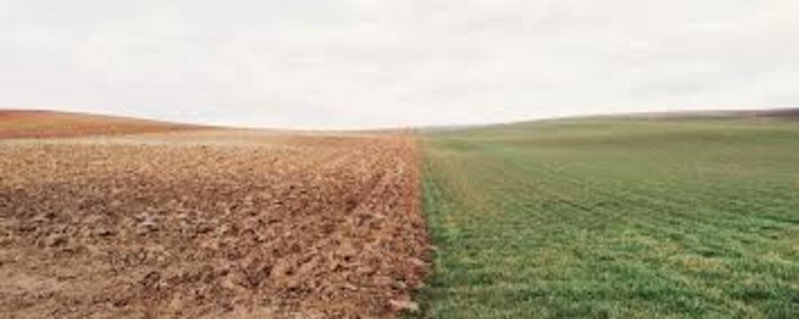
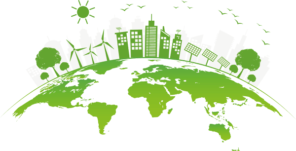
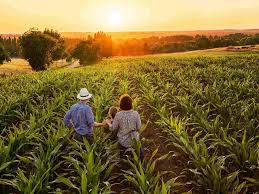

Agricultura é inimiga da sustentabilidade?
O futuro sustentavél que precisamos
É comum estabelecer ambos os conceitos como extremos opostos devido a ideia de que um interrompa os processos do outro 
Entretanto, podemos ver que a comunidade agro vem buscando formas de combater oque conhecemos como " Agricultura Con-
vencional ", modo que se tornou popular em 1.970 e vem sendo usado até hoje: Sendo o método que é culpado pela degrada-
ção dos solos de todos os países, pesquisas apontam que até 2.050 pelo menos 90% de todo o solo brasileiro será usado
E se tornará inviável a utilização desse solo degradado, devido a seu consumo excessivo de água, o abuso dos nutrientes
do solo, o consumo de energia. Fora os problemas causados a população, já que a agricultura convencional valo-
riza o uso de agrotóxicos e venenos para salvamento das grandes produções feitas em busca da acumulação de dinheiro
Sustentabilidade
Sérgio Schneider comenta em palestra que a demanda pela produção não é resultado, mas sim o maior problema enfrentado  
afinal, a demanda faz com que o agricultor tenha a necessidade de produzir mais do que o solo atualmente aguenta, oque
é fruto do nosso método capitalista, que valoriza que a classe dominante continue buscando lucros através de seus meios
não podemos endemoniar os grandes produtores rurais, a grande maioria das pessoas sempre está em busca do enriquecimento
e da busca pelo melhor modo de vida, entretanto, isso não justifica a falta de tratamento adequado com o solo e a ignorância
com quanto a este problema que pode escalonar de forma mais rápida do que parece, ao ponto de que o argumento de muitos
de: " Isto afetará as futuras gerações, não será meu problema " ser inutilizada vendo que a mairoia das pesquisas apontam
que os problemas estarão a tona em torno de 3 décadas, para efeito de comparação, a década de bronze, os " Anos 90 "
foram a também 30 anos.
O método já se mostra arcaico quando observamos que o consumidor hoje em dia está pré-disposto a sustentabilidade, afinal
este paga mais pelo produto natural, sem agrotóxicos e com menos riscos a sua saúde e de seus companheiros.
Em busca de combater a agricultura convencional, temos a agricultura orgânica, da qual já vem com o pé direito no Brasil;
A legislação brasileira introduz o produto orgânico como:
"(....) aquele que é obtido em um sistema orgânico de produção agropecuária ou oriundo de processo extrativista sustentável e não prejudicial ao ecossistema local"
Sendo assim, o principal ponto da agricultura orgânica é a falta do uso de agrotóxicos ou fertilizantes sintéticos
a ideia é utilizar fertilizantes naturais de materia orgânica, nunca deixar sua terra exposta, a cobrindo com técnicas
de folhas secas ou outros métodos, controle de pragas com plantio de hortelã, cravos e outras plantas e oléos que possam vir a repelir
insetos, além da rotação de culturas, onde nunca se deve ficar plantando apenas o mesmo solo no terreno.
Pesquisar apontam em um aumento de 11% na agricultura orgânica
Meio Ambiente
A melhor conclusão que podemos tirar disso, é que existe sim uma forma de construir sustentabilidade mesmo
sendo parte da bolha agro, e que o meio-ambiente a cima de tudo, como já sabemos, é algo que pode e deve ser preservado
uma beleza inestimável da natureza que logo pode vir a nos deixar, e isto pode não ser um destino fixo se
depender de nós que temos noção de que podemos mudar o mundo como conhecemos..
Contato
Guilhermyhenriquy26e@gmail.com
@guizo656